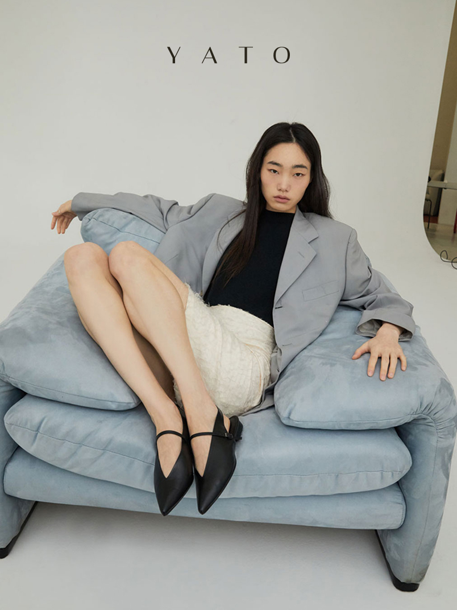
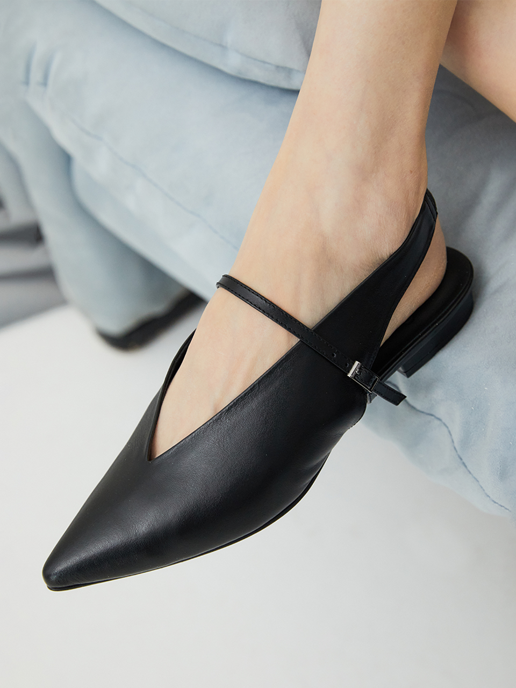
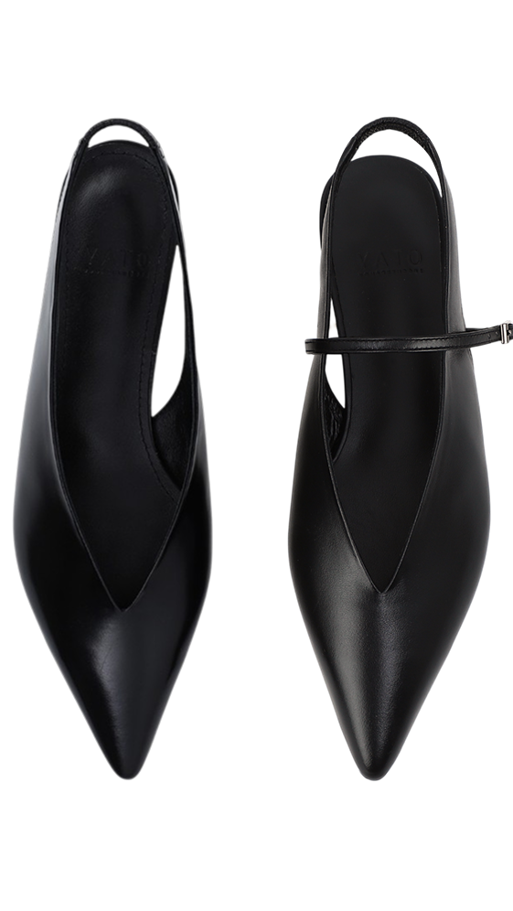
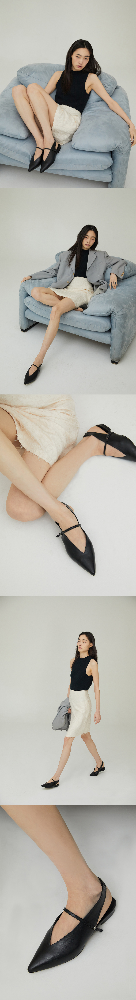
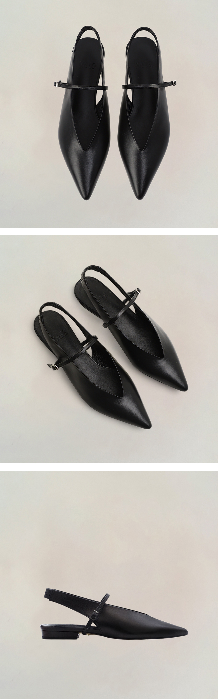
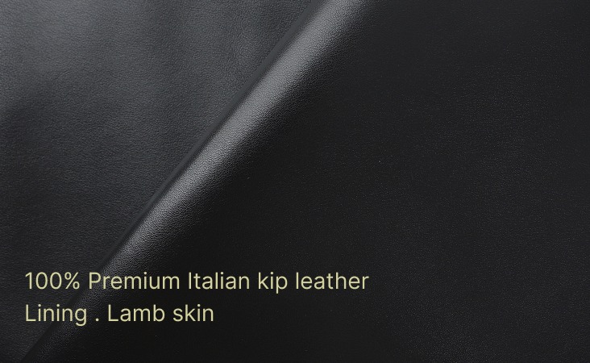
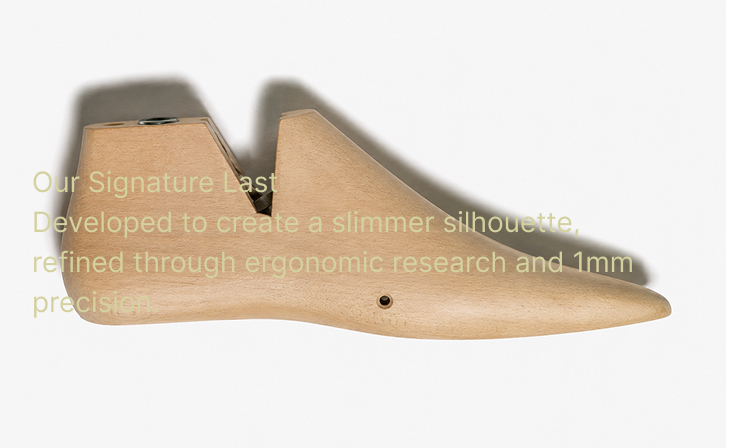
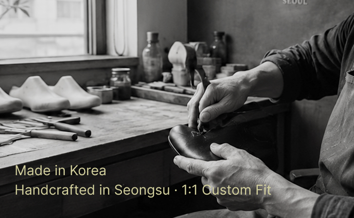

Attitude is not explained.
It is revealed.

또렷한 존재감, 부드러움 속의 긴장감
클래식한 디자인의 포인트토 슬링백 발렌타인 플랫슈즈
Slim Silhouette
슬림한 앞코라인과 깊게 파인 V라인 컷팅은 발과 다리 라인을 더욱 길고 슬림하게 보이게 합니다. 낮은 굽에서도 세련된 긴장감을 완성하며 하이힐을 신은 듯 당당한 실루엣을 선사합니다.
Feminine Tension
기본 제공되는 얇은 스트랩을 더하면 발등을 안정감 있게 감싸며 한층 더 여성스럽고 섬세한 무드로 전환됩니다.

Versatile Styling
탈부착 가능한 스트랩 디테일을 통해 그날의 스타일과 분위기에 따라 다양한 무드로 연출할 수 있습니다. 체인 스트랩, 밍크 스트랩 등 추가 스트랩 액세서리를 통해 다양한 스타일로 변주할 수 있습니다. 하나의 슈즈로 자신만의 감각을 자유롭게 표현해보세요.


좋은 실루엣은 좋은 소재에서 시작됩니다.
YATO는 겉감과 안감 모두 엄선된 천연가죽을 사용하며, 소재의 질감과 형태, 착화감까지 고려해 신중하게 선별합니다.

아름다운 형태는 미세한 차이에서 만들어집니다.
YATO는 발의 움직임과 아름다운 비율을 함께 고려하며, 0.1mm의 차이까지 다듬은 시그니처 라스트를 직접 개발합니다.

완성도는 장인의 손끝에서 시작됩니다.
YATO는 국내 생산을 원칙으로, 성수동 아틀리에의 숙련된 장인이 한 켤레씩 정교한 수제 공정으로 완성합니다. 보이지 않는 디테일까지 고객의 발 형태를 반영한 1:1 커스텀 핏 서비스를 제공합니다.

YATO GUARANTEE & CARE SERVICE
오랫동안 아름다운 실루엣을 유지하기 위한 케어 서비스를 제공합니다.
One Year Warranty
구매일로부터 1년 무상 A/S 지원
Silhouette Refresh
착화로 변형된 실루엣을 되살리는 1회 무료 실루엣 복원 서비스
| EU | 35 | 35.5 | 36 | 36.5 | 37 | 37.5 | 38 | 38.5 | 39 | 39.5 | 40 |
|---|---|---|---|---|---|---|---|---|---|---|---|
| KR | 220 | 225 | 230 | 235 | 240 | 245 | 250 | 255 | 260 | 265 | 270(mm) |
1:1 YATO Atelier Custom-Fit Care
INQUIRY
KAKAO CHANNEL+@yatomode 지금 문의하러가기상품 안내
배송 안내
교환 및 반품 안내
사이즈 교환 안내
제품 하자로 인한 교환 및 반품 안내